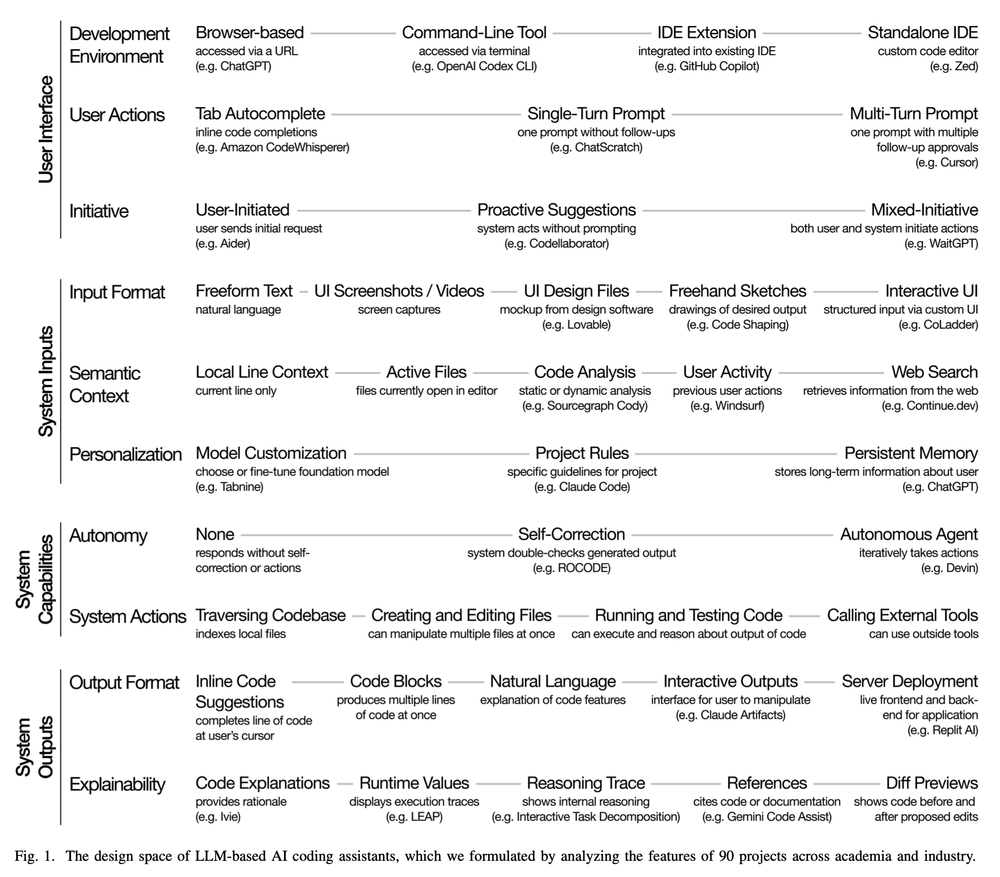

Associate Teaching Professor
Carnegie Mellon University
What are the design decisions involved in building an AI coding assistant?
A paper was recently published, The Design Space of LLM-Based AI Coding Assistants: An Analysis of 90 Systems in Academia and Industry, by Sam Lau and Philip Guo at UC San Diego that tries to answer this question.
They looked at 90 AI coding assistants and identified 10 design dimensions. The paper describes how we went from autocomplete to chat to agents, and why industry is converging on speed and polish while academia explores novel interaction designs. Then it maps the design dimensions to 6 personas of users with the key trade-offs for each.
We have seen three major UIs for AI coding assistants so far:
Autocomplete (2021-2022): Inline gray text that you press tab to accept. Minimum friction, maximum flow. Great when the function you want exists on Stack Overflow or GitHub.
Chat (2023-2024): Prompts with multi-turn clarifications and code blocks. Features “explain this”, “write tests”, "refactor", etc. Broadened the audience beyond IDE power users.
Agents (2024-2025): Tools that read/write your repo, run commands, browse docs, and chain steps. UIs now look like CI logs with diff reviewers. Magic when it works.
The researchers examined 90 code-generating tools from 2021-2025, which included 58 industry products and 32 academic projects, and ran a qualitative analysis across the tool (when available), documentation, publications, product sites, and demo videos.
From that analysis, they identified 4 broad categories of design for AI coding assistants: user interface, system inputs, capabilities, and outputs. These 4 categories are further made up of 10 design dimensions: development environment, user actions, initiative, input format, semantic context, personalization, autonomy, system actions, output format, and explainability.
Rephrased in my own words:
Industry converges: Every product ships the same bundle consisting of inline + chat + agent, with slogans like "speed of thought". The focus is on latency, polish, and breadth. They sell the idea that you can "tab, tab, tab" or do a big one-click refactor as if it is magic.
"One recurring observation as we performed this research was how hard it could be to find out precisely what some industry products did."
Academia diverges: Prototypes probe the weirder edges, like scaffolding for reflection, proactive secondary cursors, teaching-oriented friction, multimodal sketch-to-code, or better explainability for data science. Less shiny and more whimsical ideas.
In the discussion of the paper, the researchers propose 6 personas that use these AI coding assistants and map the design dimensions to the personas' needs.
The design of these tools is entirely trade-offs, but this isn't new. How much control do you give the user? How much customization? Do you prioritize the power user or the novice? These have always been fundamental to designing any system. Sure, AI complicates it because it is so easy (and tempting?) for the tool builders to throw the kitchen sink at their users.
You can choose between access and power, control and convenience, simplicity and capability. Browser UIs are easy to try but cap customization and integratiions. Inline completions keep users in flow, while multi-turn chat yields richer context at the cost of friction. Proactive features can give serendipity but may erode a user's sense of control. More personalization may help experts but can overwhelm novices. Letting the AI plan multi-step changes and call more system actions is powerful, but increases the surface area for failures. Etc.
We're past the "wow, it writes code" phase. The interesting work now is shaping how these assistants fit real workflows: deciding when to be fast and when to be careful, what context to include, and how to keep humans in the loop without overwhelming them.
The authors close by arguing we need the best of both worlds, industry's production rigor and academia's innovation, to bridge the "two cultures" and move beyond hype.
You can read the paper here: The Design Space of LLM-Based AI Coding Assistants: An Analysis of 90 Systems in Academia and Industry.
Check out a few of my other related articles: